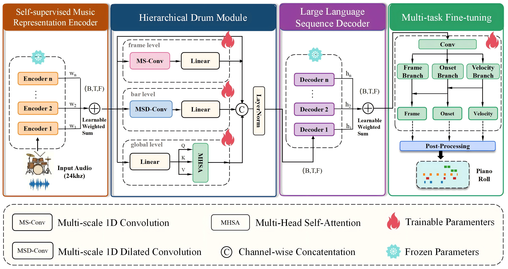

Demo 01
Green = Hi-Drum · Blue = Ground Truth · Orange = OaF Drums
ICASSP 2027
A framework for drum transcription based on self-supervised music representations
Hierarchical drum modeling over frozen music and language backbones—onset, frame, and velocity together.
Abstract
Automatic drum transcription remains difficult because percussive sounds are transient, broadband, and weakly harmonic. Existing methods also underuse section-level pattern consistency and the evolution of fills between sections. Hi-Drum combines a self-supervised music encoder and a language-model decoder with a Hierarchical Drum Module (HDM): three parallel branches for frame-level detail, bar-scale context, and longer-range structure, plus joint onset, frame, and velocity prediction.
Experiments on Groove and E-GMD—including component ablations, twelve encoder–decoder pairs, and instrument/case analyses—support the framework. On E-GMD, Hi-Drum reaches 92.75% Note F1 and 87.87% velocity-aware Note F1.
Architecture

Case Study
Each case overlays three piano rolls in one WaveRoll player (same engine as WaveRoll Studio). Toggle track visibility, zoom/pan the roll, and play with synchronized reference audio.
Green = Hi-Drum · Blue = Ground Truth · Orange = OaF Drums
Green = Hi-Drum · Blue = Ground Truth · Orange = OaF Drums
Green = Hi-Drum · Blue = Ground Truth · Orange = OaF Drums